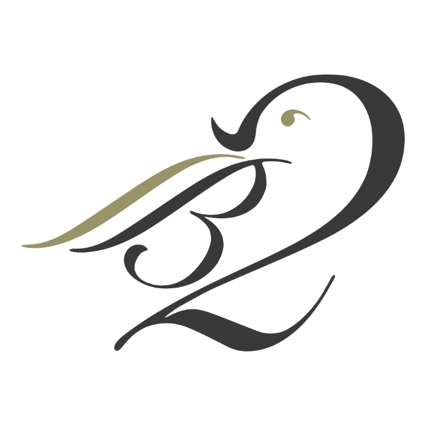
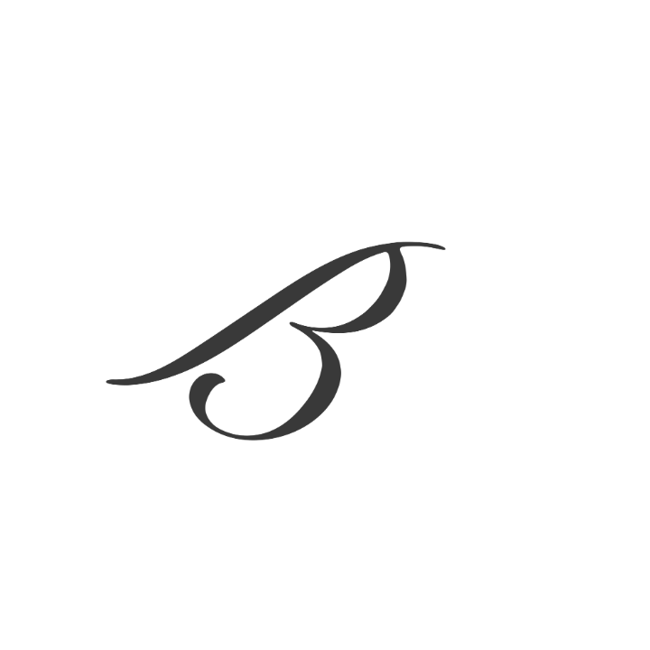
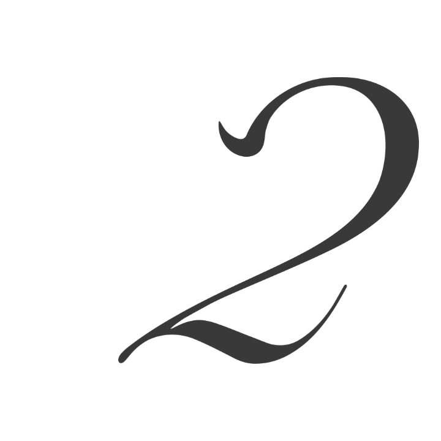

01 · The feather
Vision
A progressive adult education landscape where forward-thinking training providers achieve commercial scale without the friction of shifting statutory demands.
Our story
2BIRDS exists for one reason. We serve the best, with the best.
Why we exist
Building a market-leading training organisation demands balancing commercial ambition with uncompromising regulatory discipline. Across Singapore, forward-thinking academies often see their momentum stalled not by a lack of vision, but by the friction of shifting statutory circulars and complex courseware submissions. Navigating funding criteria and statutory audits should never compromise course quality.
2BIRDS is a management consultancy specialising in the training and adult education sector. We advise leading providers on operational governance, accreditation standards, and instructional design. We were established on a simple premise, to serve leading institutions with the finest talent the sector has to offer, giving exceptional academies a strategic partner who handles compliance with absolute certainty.
Composed of artificial intelligence specialists and legal professionals who actively teach as adult educators, our multidisciplinary team brings flawless execution, sound pedagogy, and total regulatory certainty to every project. By uniting technological capability with deep statutory expertise, we shoulder the administrative burden so visionary training providers can focus on commercial growth.
OUR BRAND PILLARS
Motion supported by structure.



01 · The feather
A progressive adult education landscape where forward-thinking training providers achieve commercial scale without the friction of shifting statutory demands.
02 · The letter
To deliver robust operational governance, curriculum architecture, and accreditation standards that safeguard institutional compliance and drive growth.
03 · The eye
Anticipating regulatory developments, funding criteria adjustments, and statutory updates well before they take effect, ensuring institutional stability and continuous readiness.
04 · The numeral
Absolute accountability, pedagogical excellence, and an enduring standard of work built to withstand scrutiny and sustain long-term growth.
Aim for the skies, and one day you look down from them. The sky belongs to whoever learns to reach it, not only to those who could afford the view.
The name
The science of flying in formation.
We apply that exact operational principle to advisory work. Operating as a registered training provider brings substantial friction from shifting statutory circulars, accreditation standards, and rigorous audit demands. 2BIRDS steps into the front to absorb that regulatory resistance. By anchoring your governance and curriculum architecture from day one, we ensure your institution moves with speed, clarity, and commercial focus.
INSTITUTIONAL PEDIGREE AND CLIENTS
Every engagement is backed by the standards of our founding team. The organisations shown represent where our partners have led operations, engineered curriculum, and delivered high-stakes advisory work across the industry.
INSTRUCTIONAL DESIGN
Adults take in new information in different ways. Some grasp concepts quickly through diagrams, while others learn best through open discussion, reading detailed manuals, or hands-on practice. When a course relies on just one teaching style, too many learners get left behind.
We build every programme to solve that problem. Using the VARK model, we balance four core ways of learning: visual graphics, spoken discussions, written texts, and practical exercises. Blending these methods ensures complex ideas are easy to follow and retain.
Every course we structure gives learners more than one path to the same skill. Participants pick up knowledge in the way that suits them best, grasping complex ideas without falling behind. The result is workplace competence that lasts, strong engagement, and programmes people value.